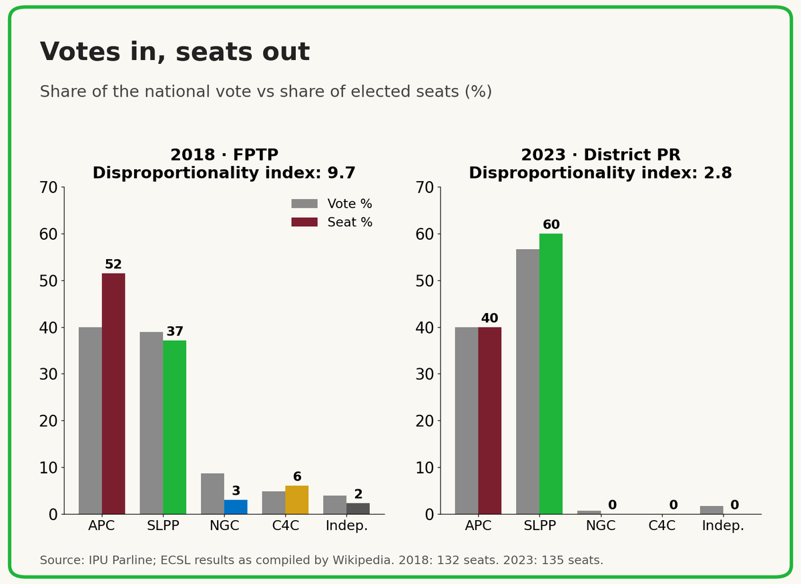
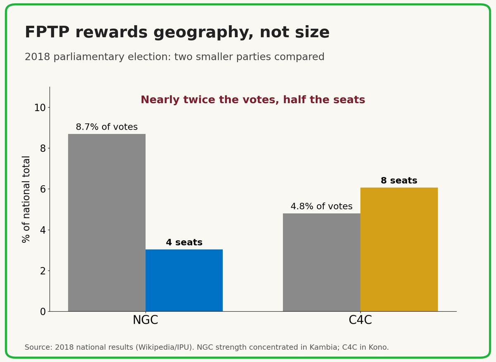
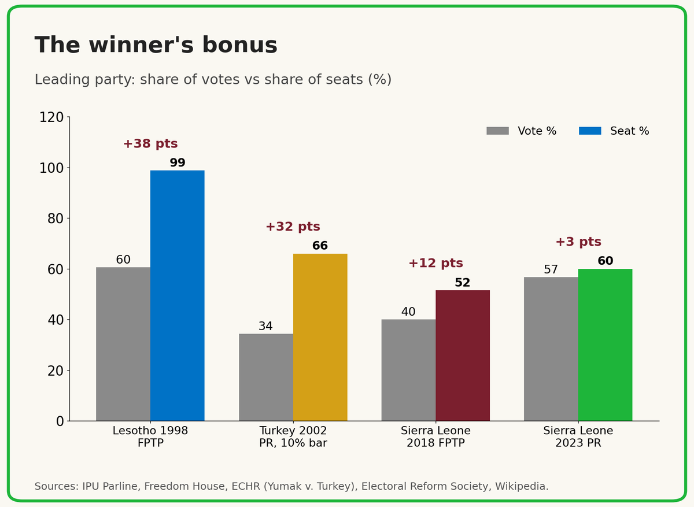
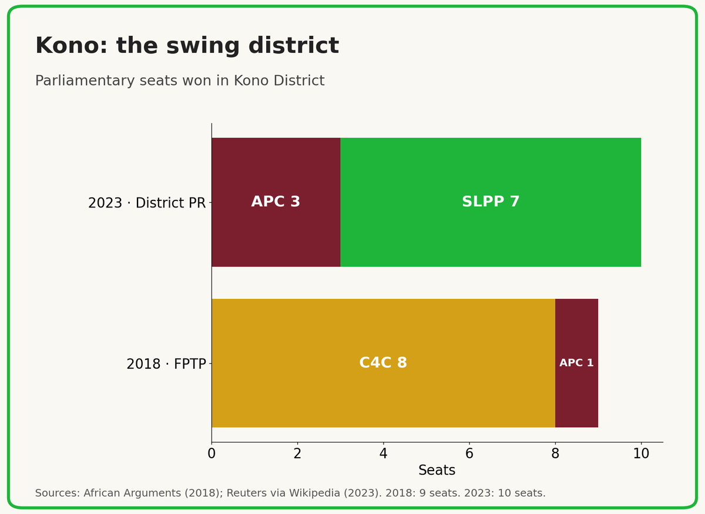
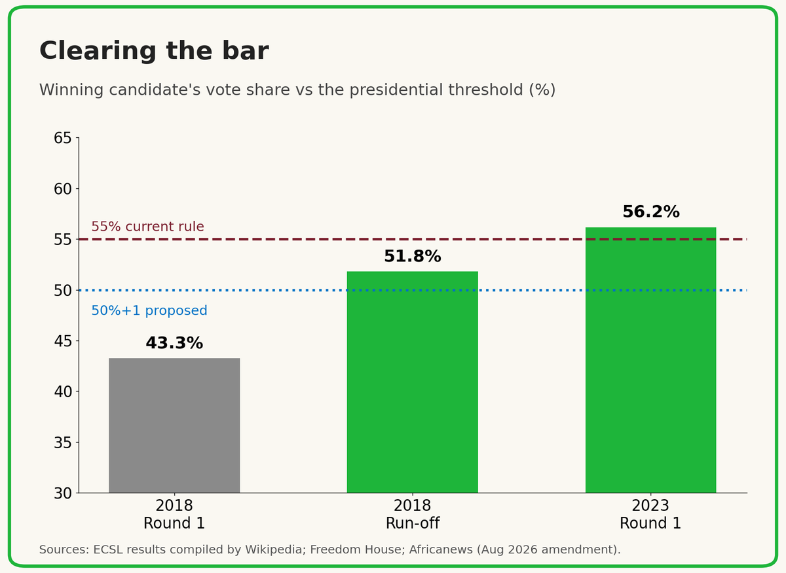
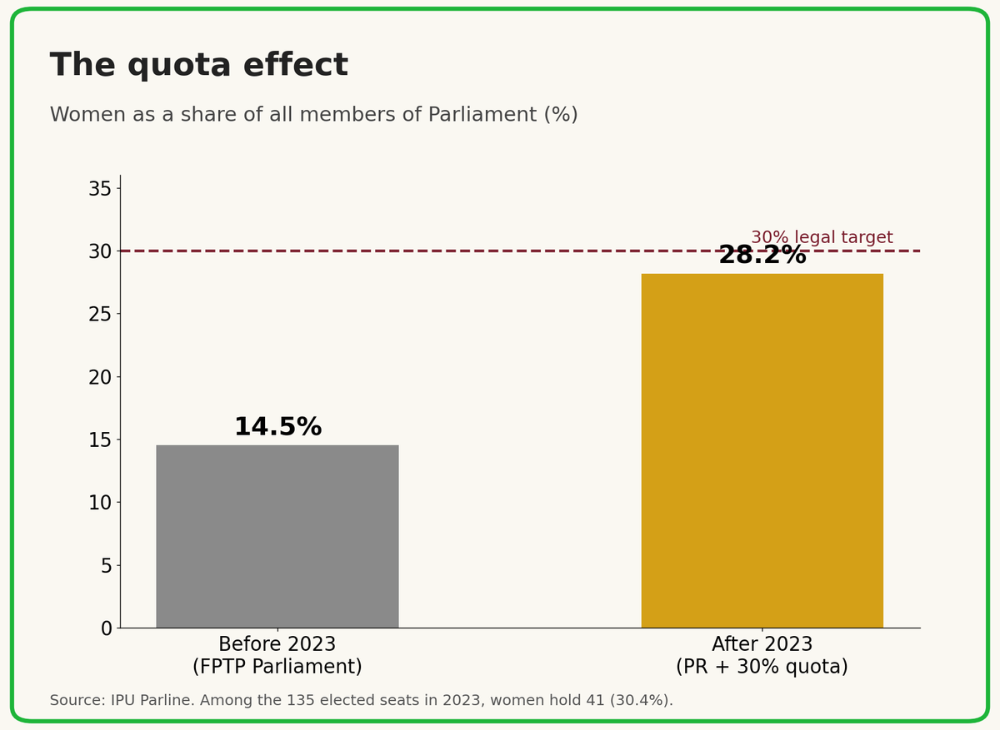
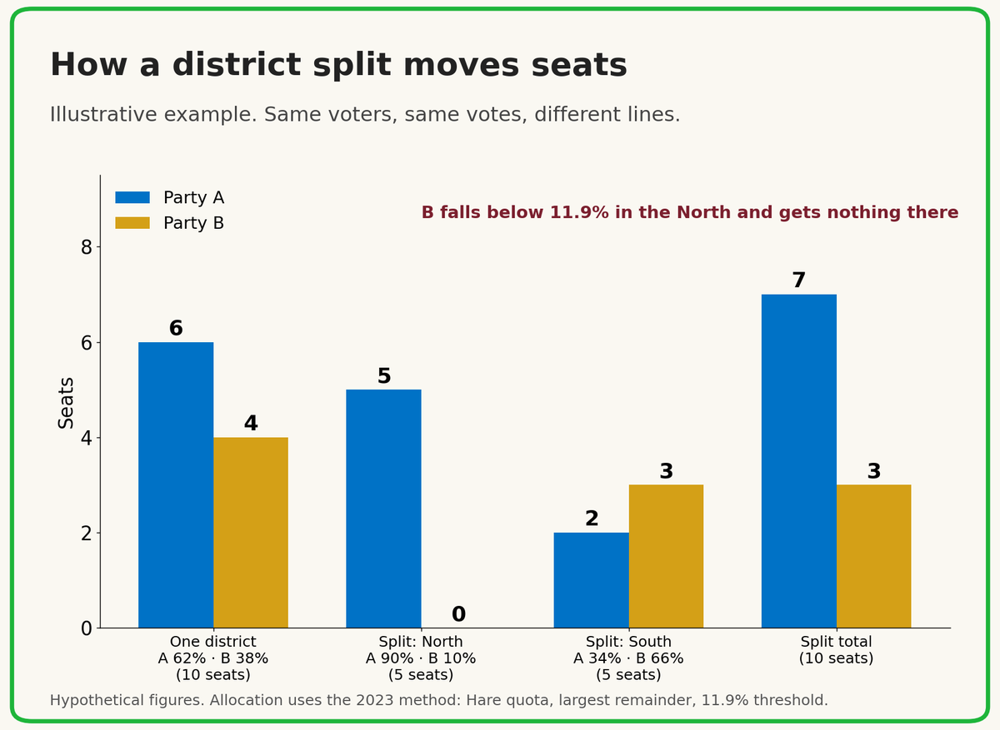
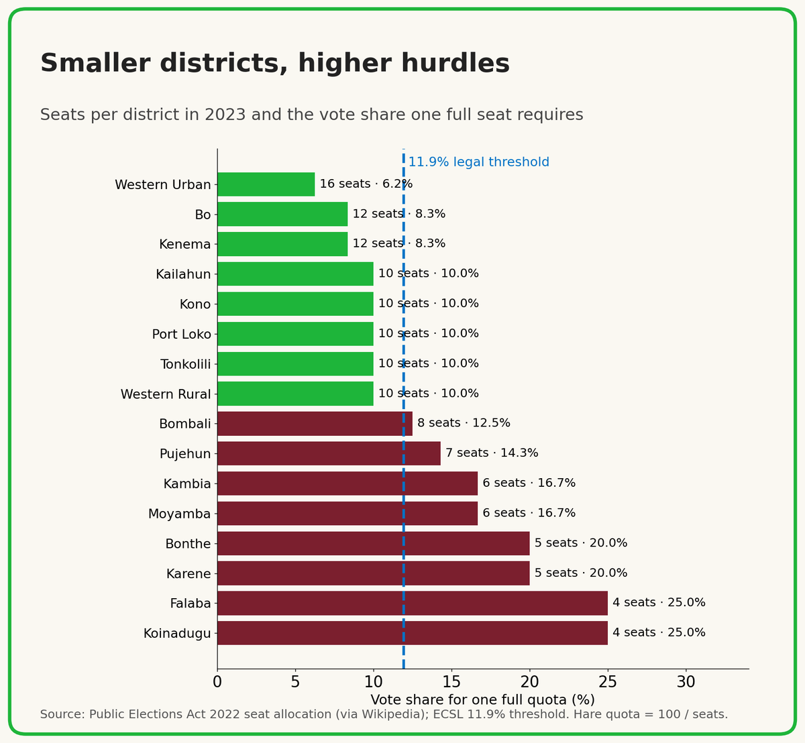

The Arithmetic of Representation
The Electoral System Doctrine: how proportional representation and first past the post shape our parties, our regions and the national cake, and the guardrails Sierra Leone needs before 2028
Listen to the audio edition
About 1 hour 7 minutes. A longer, conversational version with eight hard questions.
Player not loading? Open the audio in Google Drive.
Narrated with an AI-generated voice. Musa and Aminata in the audio edition are composite characters.

Contents
- Why This Doctrine, Why Now
- How the Two Systems Work
- What the Numbers Show
- The Symbol, the List and the Independent
- Every Card a Vote and the Legitimacy of the List
- The Amendment Fight: Gains and Losses
- Regions, Ethnicity and Diversity
- Sharing the National Cake
- Gerrymandering, Sierra Leone Style
- The Long Run and the Case for PR
- The Doctrine: Ten Guardrails
- Conclusion
Why This Doctrine, Why Now
Ask ten Sierra Leoneans how their Member of Parliament was chosen in 2023 and most will say they voted for the green or the red. Ask them how those votes became seats and the conversation usually stops. That is a problem for any democracy. It is a bigger problem in 2026, because the rules are once again being rewritten.
In August 2026, Parliament passed a constitutional amendment that would, among other changes, entrench proportional representation for parliamentary elections, lower the presidential threshold from 55 percent to a simple majority with a requirement of at least 20 percent in two-thirds of districts, and set a 30 percent quota for women in political leadership. The bill passed by a simple majority of members present. Lawmakers of the All People's Congress (APC, Sierra Leone) walked out, arguing that a two-thirds majority was required, and the party has taken the matter to the Supreme Court.
Status note: as of 14 October 2026, the Supreme Court has not ruled. Every statement in this doctrine about the amendment should be read with that status in mind, and rechecked before republication.
Doctrine No. 6, The Arithmetic of Amendment, examined how the amendment bill was counted through Parliament. This installment turns to a different count: how the votes of citizens become seats, and who controls that conversion.
This doctrine does three things. It explains, in plain language, how the two systems work. It examines what each system does to our parties, our regions, the sharing of national resources and the risk of manipulation, drawing on Sierra Leone's own data and on case studies from Africa and beyond. And it proposes guardrails that should command support from any party that expects, one day, to sit in opposition. Consistent with this series, the SLPP is held to the same standard as its opponents.
How the Two Systems Work
First Past The Post
Under First Past The Post (FPTP), used from 2007 to 2018, the country is divided into single-member constituencies, 132 of them in 2018. You vote for a named candidate, and whoever gets the most votes wins the seat, even with 35 percent. Every other vote cast in that constituency elects nobody.
District Block Proportional Representation
Under District Block PR, used in 2023, each of the 16 districts is treated as one large constituency and allocated seats by population: from 4 seats in Falaba and Koinadugu to 16 in Western Urban. You vote for a party, not a person. A party or independent candidate must win at least 11.9 percent of the district vote to qualify. Qualifying contestants then share the seats in proportion to their votes, using the Hare quota and largest remainder method, and seats go to candidates in the order the party ranked them on its list. Fourteen further seats are held by Paramount Chiefs, elected separately.
The 11.9 percent bar was not derived from district sizes. The Electoral Commission for Sierra Leone (ECSL) obtained it by dividing the number of districts (16) by the number of seats (135) and rounding up. The same bar applies in a 4-seat district and a 16-seat district.
A simple example
Imagine a district with 8 seats. Party A wins 60 percent, Party B 30 percent and Party C 10 percent. Under PR, Party C falls below 11.9 percent and wins nothing; Party A takes 5 seats and Party B takes 3. Under FPTP, with the same district cut into 8 constituencies, the result depends entirely on where the votes sit. If Party A leads narrowly everywhere, it wins all 8 seats, and Party B, with nearly a third of the vote, wins none.
Merits and demerits at a glance
| Feature | First Past The Post | District Block PR |
|---|---|---|
| You vote for | A named candidate | A party list |
| Link to your MP | Strong: one named MP per constituency | Weaker: several MPs share a district |
| Votes to seats | Can diverge sharply | Closely tracks votes above the threshold |
| Wasted votes | Every vote for a losing candidate | Votes for contestants below 11.9% |
| Small parties and independents | Can win where locally concentrated | Must reach 11.9% of a whole district |
| Women's representation | Historically low | Enables list-based quota |
| Boundary politics | Constituency lines can be manipulated | District lines and seat counts become the target |
| Party leadership power | Picks the candidate | Picks the candidates and their order |
What the Numbers Show
2018: the geography premium
In 2018, the APC won 39.9 percent of the parliamentary vote and 68 seats, or 51.5 percent of elected seats. The SLPP won 38.9 percent of the vote and 49 seats, or 37.1 percent. A one-point lead in votes became a nineteen-seat lead in Parliament.
The smaller parties show the mechanism even more clearly. The National Grand Coalition (NGC) won 8.7 percent of the national vote and 4 seats. The Coalition for Change (C4C) won 4.8 percent and 8 seats. FPTP rewarded C4C for concentration: it won 8 of the 9 seats in Kono. The NGC's 4 seats came from Kambia. Its additional support, spread thinly elsewhere, elected nobody.

2023: proportional, but narrower
In 2023, the SLPP won 56.7 percent of the parliamentary vote and 81 seats, or 60.0 percent. The APC won 40.0 percent of the vote and 54 seats, also 40.0 percent. The Gallagher index, a standard measure of how far seat shares stray from vote shares (zero means perfectly proportional), fell from 9.7 in 2018 to 2.8 in 2023.
The other side of that ledger: no third party and no independent won a seat. About 92,500 voters, 3.3 percent of the total, cast ballots that elected no one. Parliament became a two-party chamber.

Kono: the swing district
Kono has shaped every national election since 2012, and it illustrates the shift. In 2018, C4C won 8 of its 9 seats and the APC won 1. In 2023, the SLPP won 7 of 10 and the APC won 3.

What the numbers cannot tell us
It is tempting to conclude that PR wiped out the NGC and C4C. The published evidence does not support so definite a conclusion. Two explanations fit the same outcome.
- Performance. If a party's support collapsed, it would have lost its seats under any system. The NGC's national vote fell from 8.7 percent in 2018 to 0.65 percent in 2023, which points strongly to a loss of support.
- System. If a party kept meaningful but sub-threshold support concentrated in a few chiefdoms, FPTP might have given it a seat while PR's district-wide bar gave it nothing.
Separating these requires district-level vote shares and, ideally, polling-station data showing how concentrated each party's support was. Those figures were not published in full. The European Union Election Observation Mission urged the ECSL to publish disaggregated results by polling station so the public could scrutinise them. Until that happens, claims about what the system did to any particular party should be labelled unresolved.
The Symbol, the List and the Independent
In Sierra Leone, the party decides who carries its symbol under either system, and an independent candidate can run under either system. Those two facts mean very different things in practice.
Under FPTP, the symbol is powerful but checked
The party picks one candidate per constituency, and in a stronghold the symbol is practically the seat. But voters still choose a person, and an aspirant who is denied the symbol has a real exit: run as an independent in one constituency where they are personally known. Because a popular local figure can beat the party's choice, leaders must weigh local popularity when allocating symbols.
Under PR, the symbol becomes a ranked list
The party decides not only who runs but in what order, and voters cannot change that order. In a district where a party expects 8 of 12 seats, positions 1 to 8 are effectively elected on the day the list is filed, and position 9 is effectively told no. For most seats, the party's internal process stops being a step toward the election and becomes the election.
The independent exit nearly closes
An independent under PR must win 11.9 percent of an entire district, not a plurality in one constituency. In 2023, independents won 1.7 percent of the national vote and no seats. Freedom House noted that the threshold reduced opportunities for smaller parties and independents, and that local elites in both major parties control parliamentary candidate selection.
The consequences follow directly. Power shifts upward, because an MP's career depends more on list ranking than on voters. Grievances go underground, because a denied aspirant who cannot viably run independent may sit out, campaign quietly against the list, or defect, and under PR that lost turnout hurts the party's seat share across a whole district. The legitimacy of the list process becomes each party's largest internal risk.
Every Card a Vote and the Legitimacy of the List
Doctrine No. 9, Every Card a Vote, proposed that dues-paying members, not a small body of delegates, choose the party's regional and national executives and its flagbearer. PR makes that argument more urgent. The delegate system and every card a vote are methods for deciding who leads a party. The PR list question is different: who ranks parliamentary candidates in each district. A list in Kono is legitimate in the eyes of Kono members only if Kono members had a say in it. National delegates choosing officials, who then sit on a committee that ranks the Kono list, is two steps removed from the people who must campaign for that list.
Every card a vote bears on this in three ways. Directly, if it is extended to the list: a district-level member vote naturally produces a ranking, with aspirants ordered by votes received, which maps cleanly onto a PR list. Indirectly, through the register: a credible member vote requires a verified, district-by-district roll of card-holders, which is exactly the infrastructure a list primary needs. And indirectly, through officials, who carry a broader mandate when elected by all members, although that borrowed legitimacy does not stop an imposed ranking from feeling imposed.
There is precedent abroad. In Israel, which elects its parliament by national list PR, major parties including Likud and Labor have used primaries of registered members to rank their lists. In South Africa, where national closed lists gave party headquarters strong control over who sits in Parliament, the Constitutional Court ruled in 2020 that the electoral law must allow independent candidates, and Parliament amended the law before the 2024 elections.
The same design principle from Doctrine No. 9 applies here. Members should control the final ballot, one member, one vote, while the party hierarchy's influence sits at the nomination and qualification stage, where it vets who may stand. No. 9 showed that once delegate weight on the final ballot passes about 25 percent, delegates can overturn a clear member majority; a list ranked that way would look like the delegate system with extra steps. A member vote also needs its own safeguards: positions that keep every chiefdom or ward cluster in contention, compliance with the 30 percent women's requirement, a clean and published register with a fixed cut-off date, and a narrow, reasoned leadership veto backed by an appeals process.
The Amendment Fight: Gains and Losses
Both parties are reading the same reform as a bet on who is bigger and better distributed nationally, and they have placed opposite bets. The SLPP argues the reform lowers election costs and avoids the tension of run-offs. The APC argues that a lower threshold weakens presidential legitimacy and national consensus.

What the SLPP stands to gain
- Fewer run-offs in an open-seat race. With no incumbent on the 2028 ballot, clearing 55 percent is far from certain. At 50 percent plus one, the larger party wins outright more often.
- PR locked into the Constitution. In 2023, PR rested on Section 38A, a contingency clause for when constituencies have not been established. Entrenchment removes reliance on that device and sidesteps a census-based boundary fight.
- Inclusion provisions such as the women's quota and regional balance in appointments, which carry broad public appeal.
What the SLPP risks
- Legitimacy. Passing rules for an open election by simple majority over an opposition walkout invites the charge of rewriting the game before playing it. With trust in the ECSL already down roughly 30 points since 2018 in Afrobarometer data, this compounds an existing weakness.
- The court. If the Supreme Court finds that a two-thirds vote or a referendum was required, the party spends political capital for nothing.
- Rules cut both ways. A 50 percent plus one threshold helps whichever party is larger in 2028 or 2033. It is a bet that the SLPP stays the larger party.
What the APC stands to gain by resisting
- The run-off. Keeping 55 percent preserves a second round in which a runner-up can assemble a coalition. In 2018, the run-off, not the first round, decided the presidency.
- A census and a constituency map, which would restore FPTP-style contests and the independent route. The APC has also called for restructuring the ECSL.
- Process as a rallying point. Abdul Kargbo (APC, Sierra Leone), Leader of the Opposition, has said his party is not against reform as such, but that amendments need a two-thirds majority and, for entrenched clauses, a referendum. The APC has also alleged inducements to opposition MPs; those allegations have not been tested in court.
What the APC risks
- Being seen as opposing the women's quota and inclusion measures, even though its objection centres on the threshold and the process.
- Forfeiting influence over the text by walking out, and facing 2028 under rules it did not shape if the Court upholds passage.
The underexamined clause
The requirement of 20 percent in two-thirds of districts means 11 of 16. Which party clears it most comfortably depends on geographic spread, and Kono and the northern swing districts would likely decide it. This should be tested district by district against official results before anyone draws conclusions.
Regions, Ethnicity and Diversity
The core difference is simple: FPTP rewards parties for being concentrated, and PR rewards them for being spread out. Because the SLPP's base has historically been strongest in the South and East and the APC's in the North and West, that difference shapes how regionally diverse each party's parliamentary caucus becomes.
FPTP tends to deepen the regional map
A party that leads in its heartland wins nearly every seat there and almost none elsewhere, so Parliament looks more divided than the vote. Each party's caucus comes almost entirely from its strongholds. Its supporters in the other region elect nobody, which weakens the party's reason to invest in them. The genuine strength of FPTP is that a concentrated local community can elect its own representative, as Kono and Kambia did in 2018.
PR tends to nationalise each party, with a catch
Any party that clears the threshold in a district wins seats there, so votes in the other side's territory now count. That gives each party a reason to campaign everywhere and a caucus with cross-regional voices. The catch is the 11.9 percent bar: a party below it in a region gets nothing, recreating FPTP-style exclusion. If one party clears the bar widely in the other's heartland and the other does not, PR diversifies one caucus and not the other. Seat allocations show where parties won; without full district vote data they cannot show how close a party came elsewhere, and that limitation should be stated wherever this argument is made.
PR also moves ethnic and regional balancing inside the parties. In mixed districts such as Western Area or Kono, leadership decides whose names sit high enough to win. That power can be used to deliberately balance communities or to entrench whichever group dominates the party machinery. As a rule, dispersed minorities fare better under PR, and concentrated minorities fare better under FPTP.
The presidential pull
The proposed spread requirement resembles Nigeria's rule that a winning presidential candidate must take at least 25 percent of the vote in two-thirds of the states, a rule designed to force national reach in a diverse federation. But dropping to 50 percent plus one also weakens the run-off, which has historically been where leading candidates had to court regional third parties and the communities behind them.
Diversity is not only regional

Here the evidence is clearer. The Gender Equality and Women's Empowerment Act and party lists together lifted women from 14.5 percent of Parliament to 28.2 percent, and women now hold 41 of the 135 elected seats. Rwanda, which combines list PR with quotas, has had women in more than 60 percent of its lower-house seats. Lists make quotas enforceable in a way single-member constituencies do not.
Sharing the National Cake
On balance, theory and international evidence favour PR for broader distribution of public resources. In Sierra Leone, however, the electoral system for Parliament is probably a weaker lever than the presidency's control of the budget.
How each system shapes spending
Under FPTP, spending follows swing constituencies, because extra votes in a seat a party already wins, or cannot win, change nothing. Safe seats get taken for granted and opposition seats get neglected. MPs have a strong personal incentive to deliver visible local projects, which is real accountability, but it favours scattered projects over national programmes.
Under PR, every vote counts toward seats wherever a party is near the threshold, so there is an incentive to spread benefits into the other side's territory, and spending tends toward broad programmes such as free education and national infrastructure. The cost is diffuse accountability: with several MPs per district, credit and blame are shared, and careers depend more on list ranking than on local delivery.
Comparative research, notably by Torsten Persson and Guido Tabellini, associates majoritarian systems with more geographically targeted spending and PR with broader programmes. But research on Kenya by Robin Burgess and colleagues found ethnic favouritism in road-building, strongest in non-democratic periods, which shows that executive power can outweigh parliamentary incentives. Both SLPP and APC governments have faced accusations of favouring their heartlands.
Case study: Kenya writes fairness into the Constitution
Kenya's 2007 election, fought under winner-take-all rules for a powerful presidency, was followed by violence that killed more than 1,100 people. The 2010 Constitution responded partly by devolving power and money. At least 15 percent of nationally raised revenue must go to the 47 counties. An independent Commission on Revenue Allocation recommends the sharing formula, the Senate sets it every five years, and the formula weights population, poverty and land area. The formula is still argued over, but the argument now happens in public, over published numbers.
The lesson for Sierra Leone is that fairness is engineered less by the electoral system than by rules that do not depend on who wins: formula-based transfers to councils, published district-level spending data, and parliamentary oversight of where capital projects go. As with seats, there is only one PR cycle and little disaggregated spending data, so any claim that PR has already changed allocation here would be premature.
Gerrymandering, Sierra Leone Style
Under district block PR, the district is the constituency. Whoever can redraw, split or merge districts, or decide how many seats each receives, can shape outcomes without touching a ballot. There are three levers.
- Splitting. Carve a mixed district so that the opposing party lands below 11.9 percent in one of the new pieces, and it wins nothing there.
- Shrinking. The fewer seats a district has, the less proportional it becomes. A district of 2 or 3 seats behaves almost like FPTP, so steadily creating smaller districts would quietly undo PR while keeping its name.
- Malapportionment. Give more seats per voter to districts where your party is strong, using whichever population figures suit you.


We have been here before
In 2017, under the APC government, 20 additional parliamentary seats were created ahead of the 2018 elections, mostly by dividing large northern districts where the APC dominated, according to analysis published by African Arguments. Falaba and Karene districts were also created that year. In October 2022, under the SLPP government, the switch to PR for 2023 was announced roughly eight months before polling day. The Venice Commission's widely cited standard is that fundamental electoral rules, including the system and boundaries, should not change within a year of an election. Both moves fell short of that standard.
What the Constitution says
For constituencies under FPTP, the 1991 Constitution has real protections. Section 38 gives the ECSL the power to divide the country into constituencies, ties boundaries to a population quota with limited departures for geography and communications, requires periodic review, and subjects the Commission's delimitation to parliamentary approval.
For districts under PR, the protection is much thinner. Section 38A allows the President, after consulting the ECSL, to direct that elections be held on the basis of the existing districts where constituencies have not been established. This review found no constitutional criteria for how those districts are drawn; they are created by ordinary legislation that a simple parliamentary majority can change. Seat allocation also carries discretion: the ECSL explained that the law lets it use either the most recent population data or the data it considers representative.
The verdict: the Constitution's boundary safeguards are reasonably robust for constituencies and thin for districts. The final text of the 2026 amendment should be checked for any new district-level protections before this conclusion is republished.
Case study: Lesotho, where every system was gamed
In Lesotho's 1998 election, the ruling Lesotho Congress for Democracy (LCD) won about 60 percent of the vote under FPTP and 79 of 80 seats. The result triggered protests, an army mutiny and military intervention by South Africa and Botswana. The parties then agreed on a mixed system in which 80 constituency seats are topped up by 40 compensatory list seats, first used in 2002. Yet in 2007, observers argued that the ruling party exploited the new system through allied parties that captured compensatory seats. The lesson is that no system is manipulation-proof without guardrails.
Case study: Turkey and the cost of a high bar
Turkey's 10 percent national threshold, introduced in its 1982 Constitution, produced an extreme result in 2002: the AKP won 34.3 percent of the vote and 363 of 550 seats, about two-thirds, and only two parties entered Parliament. Turkey lowered the threshold to 7 percent in 2022. Thresholds can matter as much as the system itself. Sierra Leone's 11.9 percent bar applies within districts rather than nationally, but it is higher than Turkey's old national bar.
The Long Run and the Case for PR
How the map could change
- From colour blocks to mixed delegations. Wherever both parties clear 11.9 percent, a district sends MPs from both, and parties gain an incentive to build structures in each other's regions.
- Two-party consolidation. PR usually helps small parties, but a high threshold in modest-sized districts does the opposite. Third forces are likely to merge into or ally with the SLPP or APC, moving coalition-building inside the two big parties.
- New swing logic. Swing districts become those near the threshold or a seat-rounding point, and stronghold turnout gains value because extra votes can still win an extra seat.
- Kono's role shifts. Its parliamentary seats are split proportionally regardless, but under the proposed presidential rules its weight may grow.
- Boundary fights become apportionment fights. The contest moves from constituency lines to how many seats each district gets, and which census decides that.
The case defenders make
Seats match votes and no vote above the threshold is wasted. PR rewards national rather than regional parties, which matters in a country with a history of conflict; Sierra Leone used PR for its 1996 and 2002 elections for this reason. Scholars in the tradition of Arend Lijphart argue PR suits divided societies because it lowers winner-take-all stakes. It ends constituency gerrymandering and makes the women's quota workable.
The case against
PR weakens the personal link between MPs and voters and hands more power to whoever ranks the lists. A high threshold shuts out independents and new parties. Scholars such as Donald Horowitz argue PR can freeze ethnic blocs into parliament rather than dissolve them, and favour rules that force candidates to win votes across groups.
Then there is the adoption problem. Electoral systems last and gain legitimacy when adopted by broad consensus. New Zealand moved to a mixed proportional system only after a binding referendum in 1993, first using it in 1996, and it has endured. Sierra Leone's PR arrived in 2023 through a contingency clause and in 2026 through a contested amendment now before the Supreme Court. Whatever its merits, a system seen as imposed by one side weakens its own nation-building claim.
Middle paths
Options include a lower or magnitude-sensitive threshold; flexible lists that let voters move candidates up; a mixed system like Lesotho's, combining constituency MPs with compensatory list seats; and a minimum number of seats per district so that PR cannot be shrunk into FPTP. Falaba and Koinadugu, each with 4 seats, were a single district until 2017.
The Doctrine: Ten Guardrails
These guardrails are framed to protect whichever party is in opposition. Both the SLPP and the APC have been there, and both will be again.
- Publish everything. Disaggregated results by polling station, published within a fixed number of days, for every election.
- Freeze the map. District boundaries and seat allocations locked at least 12 to 18 months before polling day.
- Entrench the districts. A two-thirds parliamentary majority to create, split or merge any district used for elections.
- Set a minimum district size, so PR cannot be quietly converted into FPTP.
- Fix the apportionment formula in law, tied to a certified census.
- Review the threshold, considering a lower bar or one linked to district size.
- Keep an independent route viable, through a lower bar for independents or flexible lists.
- Let members rank the lists. District list primaries under every card a vote, as proposed in Doctrine No. 9: hierarchy vets nominations, members decide the order, with published criteria, a narrow leadership veto and an appeals process.
- Share the cake by formula, with published, audited district-level allocations to councils.
- Fast-track the courts, giving the Supreme Court expedited jurisdiction over boundary and apportionment disputes.
Conclusion
The choice between proportional representation and first past the post is not a choice between a fair system and an unfair one. FPTP buys local accountability at the price of wasted votes and a distorted map. PR buys fairness between votes and seats at the price of party control and, with a high threshold, a narrower Parliament. Both can be manipulated, and both have been.
The SLPP's long-term interest, as a party that governs today and will sit in opposition at some point, lies in rules it can live with from either side of the aisle. A third consecutive term won under rules both parties accept is worth far more than one won under rules half the country disputes. The arithmetic of representation is ultimately the arithmetic of nation-building: every vote counted, every region heard, and every rule built to outlast whoever wrote it.
Sources
Inter-Parliamentary Union, Parline: Sierra Leone parliamentary elections 2018 and 2023; women in Parliament.
Electoral Commission for Sierra Leone: 2023 results; threshold methodology and PR voter education material.
Wikipedia compilations of ECSL results: 2018 and 2023 Sierra Leonean general elections.
Freedom House, Freedom in the World 2019 and 2024: Sierra Leone.
African Arguments (April 2018): analysis of the 2018 parliamentary results and 2017 seat creation.
Dubawa: Counting the cost of PR system in Sierra Leone.
Africanews, Voice of Nigeria, News Central (August 2026): passage of the constitutional amendment.
Awoko Newspaper, Sierraeye Magazine, Premier Media: APC response and amendment provisions (2026).
Constitution of Sierra Leone, 1991, Section 38; Constitution (Amendment) Act 2001, Section 38A.
European Union Election Observation Mission, Sierra Leone 2023 (via IPU and Reuters reporting).
Afrobarometer Round 10: trust in the Electoral Commission.
Lesotho: Freedom House, IRIN, ACE Project, Lesotho Times (Elklit), Mail & Guardian.
Turkey: ECHR, Yumak and Sadak v. Turkey; Electoral Reform Society; Washington Institute.
Kenya: Constitution of Kenya 2010, Articles 203 and 216; KIPPRA; Brookings; Commission on Revenue Allocation.
Persson, T. and Tabellini, G., The Economic Effects of Constitutions (2003); Burgess, R. et al., The Value of Democracy: Evidence from Road Building in Kenya, American Economic Review (2015).
Venice Commission, Code of Good Practice in Electoral Matters.
Charts: author's calculations from the sources above. The district-split chart is a hypothetical illustration.
About the Author
Fomba Kassoh is Secretary General of SLPP North America (New York Chapter) and the author of the SLPP 2028 Doctrine Series. A data scientist with more than two decades in rapid transit service planning and operations, he is an adjunct lecturer in AI and business analytics and holds advanced degrees in civil, water resources and transportation engineering and an M.S. in Data Science from CUNY. He is an oil palm farmer in Kambia District and a philanthropist who partners with communities to build schools in Sierra Leone. The Doctrine Series is published at greenprofessionals.github.io.